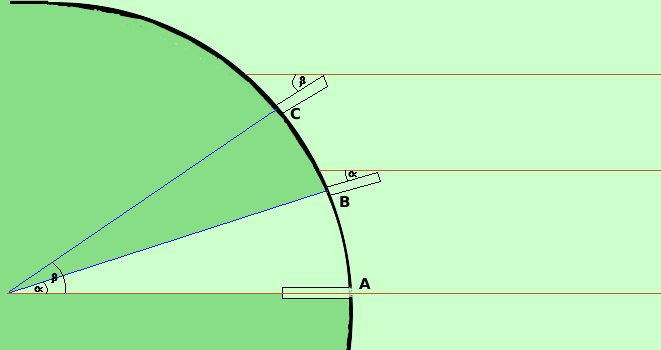

|
Eratostene osservo' che il giorno 21 giugno (solstizio di estate) a Siene il sole riusciva a specchiarsi nei pozzi, cioe' i raggi del sole arrivavano perpendicolari senza che le cose verticali facessero ombra. Invece, nello stesso giorno dell'anno, ad Alessandria d'Egitto (distante da Siene circa 5000 stadi) un oggetto verticale proiettava un'ombra secondo un angolo Se osservi la figura vedi che i due angoli Eratostene ipotizzo' che la distanza terra-sole fosse tanto grande da pensare i raggi solari paralleli e quindi, con questa ipotesi, riusci' a calcolare il valore della circonferenza e quindi del raggio terrestre: infatti circonferenza : 360° = arco AB : 2
ricavo r
e siccome, considerando gli angoli in radianti, 360° corrisponde a 2
Naturalmente possiamo fare il ragionamento anche con il sole non allo zenith in un punto: sceglieremo due punti sullo stesso meridiano e in tal caso avremo due ombre e quindi due angoli diversi, ma il ragionamento sara' lo stesso Bastera' fare la proporzione circonferenza : 360° = arco CB : (  |

|

|

|

|